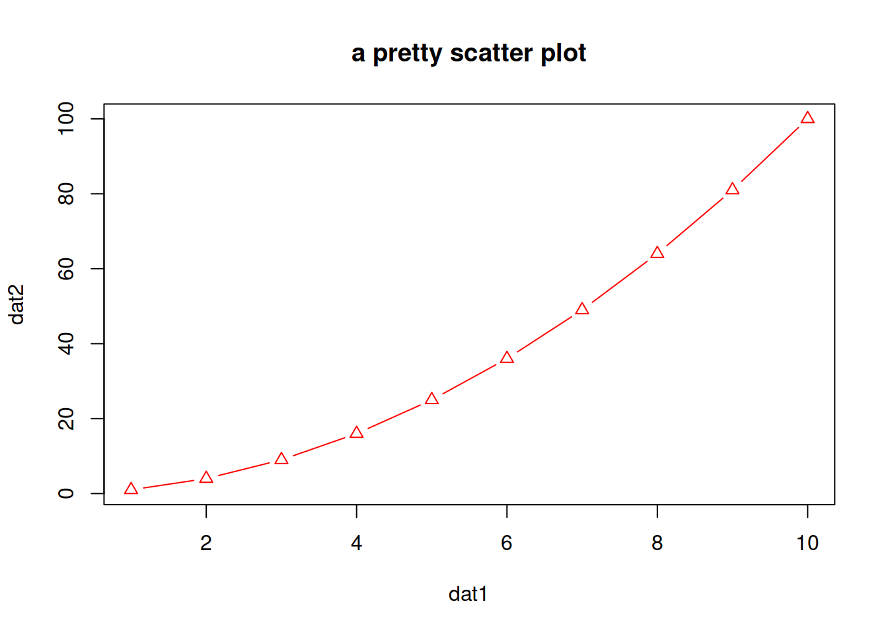
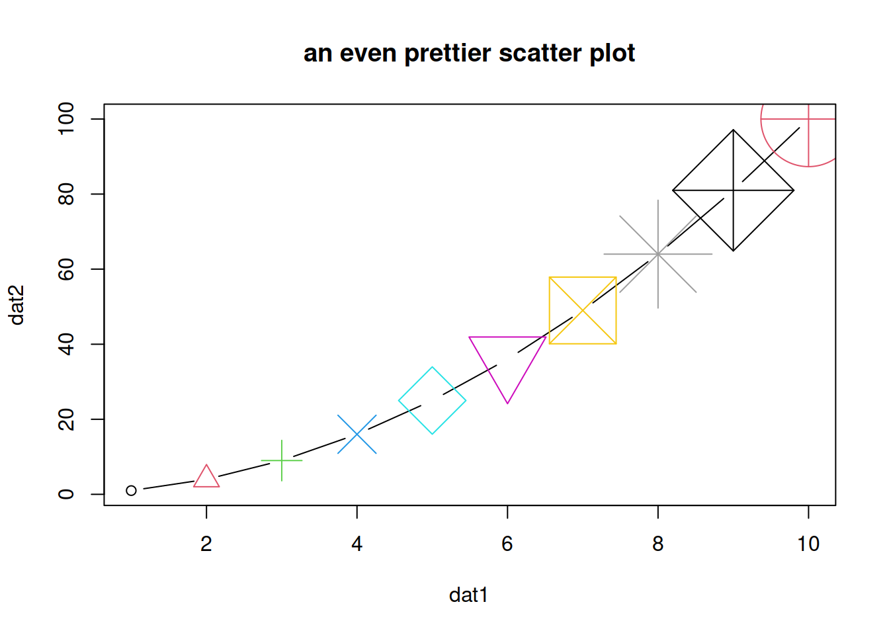

13.1 Scatter plots
A scatter plot has points that show the relationship between two sets of data.
- Simple scatter plot
# Create 2 vectors
dat1 <- 1:10
dat2 <- dat1^2
# Plot x against y
plot(x=dat1, y=dat2)
Notes:
If one vector only is given as an input, it will be plotted against the indices of each element
x and y can also be the columns of a matrix or a dataframe, e.g.
plot(x=mat[,1], y=mat[,2]).Add arguments:
- col: color
- pch: type of point
- type: “l” for line, “p” for point, “b” for both point and line
- main: title of the plot
- cex: size of points (default: 1)
plot(x=dat1, y=dat2,
col="red",
pch=2,
type="b",
main="a pretty scatter plot")
- You can play a bit:
plot(x=dat1, y=dat2,
col=1:10,
pch=1:10,
cex=1:10,
type="b",
main="an even prettier scatter plot")
Different type of points that you can use:

About colors
- Color codes 1 to 8 are taken from the palette() function and respectively code for:
# see the 8-color palette:
palette()| code | color |
|---|---|
| 1 | black |
| 2 | #DF536B |
| 3 | #61D04F |
| 4 | #2297E6 |
| 5 | #28E2E5 |
| 6 | #CD0BBC |
| 7 | #F5C710 |
| 8 | gray62 |
- There is a larger set of build-in colors that you can use:
# see all 657 possible build-in colors:
colors()
# looking for blue only? You can pick from 66 blueish options:
grep(pattern="blue", x=colors(), value=TRUE)You can also find them here.
- change the default palette with one of your choice:
palette(grep(pattern="blue", x=colors(), value=TRUE))- change the palette back to default:
palette("default")HANDS-ON
The datasets package (included in the base installation of R) contains pre-made / built-in datasets. You can see them in Environment -> change Global Environment to package:datasets.
We will use data set Loblolly (growth of Loblolly pine trees): you can check dim(Loblolly), head(Loblolly):
- Plot age (x-axis) versus height (y-axis).
- Change the title.
- Change the points type to a full triangle (see table of codes / shapes above).
- Change the points color to the color of your choice.
- Change the points size to 0.4.
Answer
# Plot age (x-axis) versus height (y-axis).
plot(x=Loblolly$age, y=Loblolly$height)
# Change the title.
plot(x=Loblolly$age, y=Loblolly$height,
main="Age and weight of Loblolly pine trees")
# Change the points type to a full triangle.
plot(x=Loblolly$age, y=Loblolly$height,
main="Age and weight of Loblolly pine trees",
pch=17)
# Change the points color.
plot(x=Loblolly$age, y=Loblolly$height,
main="Age and weight of Loblolly pine trees",
pch=17,
col="red")
# Change the points size to 0.4.
plot(x=Loblolly$age, y=Loblolly$height,
main="Age and weight of Loblolly pine trees",
pch=17,
col="red",
cex=0.4)EXTRA: you can change the color of the points depending on the value they represent.
For example, let’s say we want to color the “age 10” points in red and the other ones in black.
You can look up for a way to do it, or look at one possibility in the answer below:
Answer
# Add an extra column named colors to Loblolly that contains, for example, only black values (store in new data frame Loblolly2).
Loblolly2 <- cbind(Loblolly, colors="black")
# Set column colors to "red" in the rows that correspond to age 10.
Loblolly2$colors[Loblolly2$age == 10] <- "red"
# Set parameter `col` of `plot()` with `Loblolly2$colors`.
plot(x=Loblolly2$age, y=Loblolly2$height,
col=Loblolly2$colors)